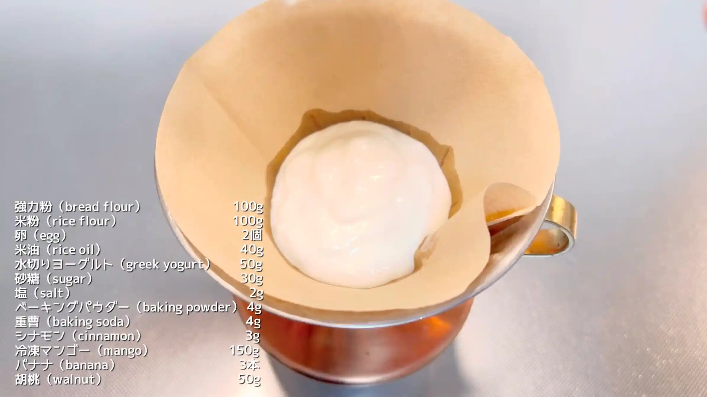
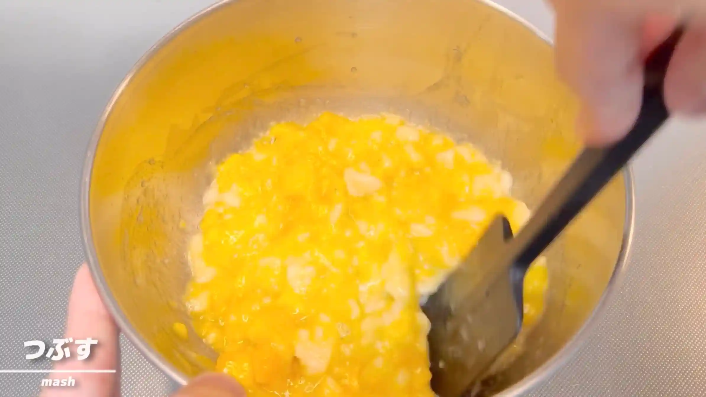
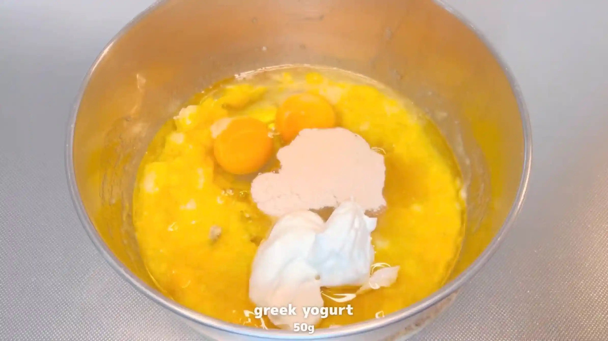
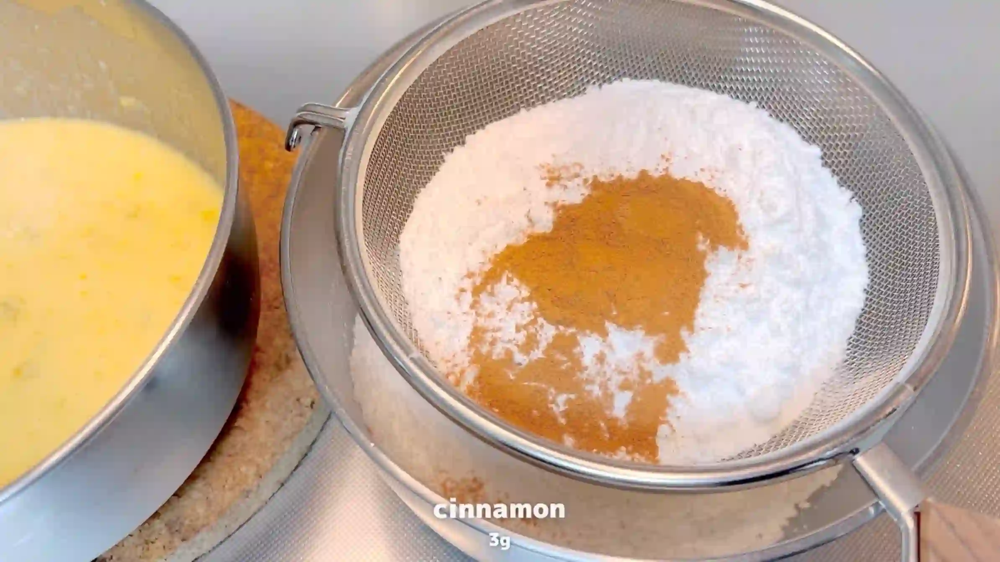
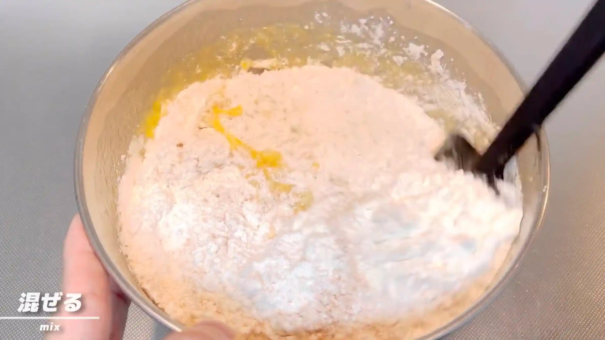
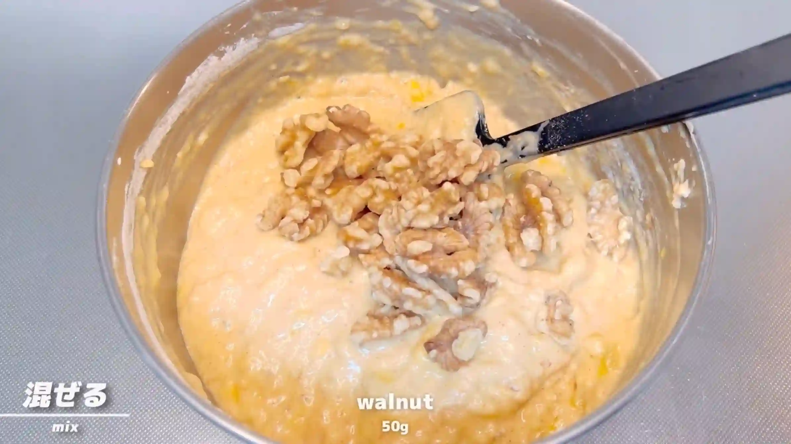
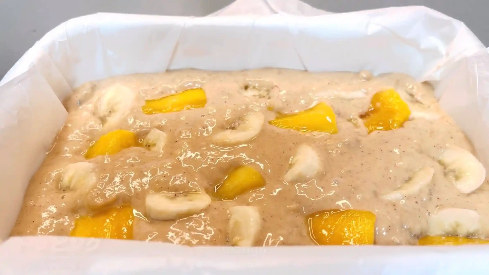
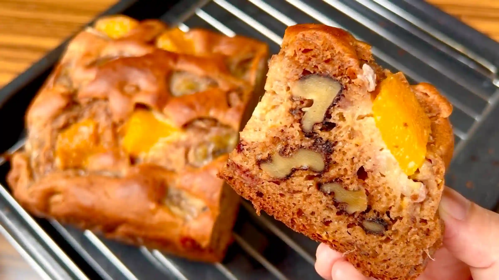

材料
※粉量を変えると自動計算されます
生地
フィリング
型
作り方
生地
STEP 1
ヨーグルトの水気を切る
100gのヨーグルトをキッチンペーパーなどで漉し、しっかり水気を切って、50gの水切りヨーグルトを作ります。水切りすると重さが大体半分くらいになりますが、ヨーグルトによって水切り後の重量が変わるため、50gを目安に調整してください。
100gのヨーグルトをキッチンペーパーなどで漉し、しっかり水気を切って、50gの水切りヨーグルトを作ります。水切りすると重さが大体半分くらいになりますが、ヨーグルトによって水切り後の重量が変わるため、50gを目安に調整してください。

STEP 2
型にオーブンシートを敷く
型に合わせてオーブンシートを敷いておきます。焼き上がった生地を型から取り出しやすくするため、底面と側面を覆っておきます。
型に合わせてオーブンシートを敷いておきます。焼き上がった生地を型から取り出しやすくするため、底面と側面を覆っておきます。
STEP 3
オーブンを190℃に予熱する
生地ができたらすぐに焼けるよう、あらかじめ190℃に予熱しておきます。
生地ができたらすぐに焼けるよう、あらかじめ190℃に予熱しておきます。
STEP 4
バナナと冷凍マンゴーをヘラで潰す（[動画 01:01]）
バナナ2本と冷凍マンゴー半量（75g）をボウルに入れ、完全になめらかにせず、少し粒が残る程度に潰します。果物の食感が残るよう、潰しすぎないのがポイントです。残りのバナナと冷凍マンゴーはトッピングに使います。
バナナ2本と冷凍マンゴー半量（75g）をボウルに入れ、完全になめらかにせず、少し粒が残る程度に潰します。果物の食感が残るよう、潰しすぎないのがポイントです。残りのバナナと冷凍マンゴーはトッピングに使います。

STEP 5
材料を加え、混ぜる（[動画 01:33]）
米油、卵、砂糖、水切りヨーグルトを加え、ホイッパーで全体がなめらかになるまで混ぜ合わせます。
米油、卵、砂糖、水切りヨーグルトを加え、ホイッパーで全体がなめらかになるまで混ぜ合わせます。

STEP 6
粉類をふるう
強力粉、米粉、塩、ベーキングパウダー、重曹、シナモンを合わせてふるっておきます。粉類を均一にしておくことで、この後の生地に混ぜ合わせやすくなります。
強力粉、米粉、塩、ベーキングパウダー、重曹、シナモンを合わせてふるっておきます。粉類を均一にしておくことで、この後の生地に混ぜ合わせやすくなります。

STEP 7
粉類を加えて混ぜる（[動画 02:16]）
粉類を加え、ヘラでさっくり混ぜ合わせます。捏ねる必要はなく、粉気がなくなる程度まで混ぜればOKです。
粉類を加え、ヘラでさっくり混ぜ合わせます。捏ねる必要はなく、粉気がなくなる程度まで混ぜればOKです。

STEP 8
胡桃を加えて混ぜる
胡桃を加え、全体に行き渡るように混ぜ合わせます。果物の水分で生地がゆるめになりやすいですが、このレシピではそのまま型に入れて焼きます。
胡桃を加え、全体に行き渡るように混ぜ合わせます。果物の水分で生地がゆるめになりやすいですが、このレシピではそのまま型に入れて焼きます。

STEP 9
型に生地を流し入れ、果物をトッピングする
型に生地を流し入れ、残しておいたマンゴーとバナナを表面にのせます。
型に生地を流し入れ、残しておいたマンゴーとバナナを表面にのせます。

STEP 10
オーブン190℃で60分、さらに200℃で15分焼く
まず190℃で60分焼き、さらに200℃に上げて15分焼きます。表面に焼き色がついたら、焦げないようにアルミホイルをかぶせます。果物をたっぷり使った水分の多い生地なので、竹串を刺して生地がついてこないことを確認して焼き上げます。焼き時間は目安とし、ご家庭のオーブンに合わせて調整してください。
まず190℃で60分焼き、さらに200℃に上げて15分焼きます。表面に焼き色がついたら、焦げないようにアルミホイルをかぶせます。果物をたっぷり使った水分の多い生地なので、竹串を刺して生地がついてこないことを確認して焼き上げます。焼き時間は目安とし、ご家庭のオーブンに合わせて調整してください。

動画でチェック
おいしく作るためのワンポイントコラム
クイックブレッドは、その昔アメリカの開拓時代に、「イーストなしで手早く作れる主食」として生まれた、歴史あるおうちパンだそうです。発酵時間がないので、思い立ったらすぐに作れます。
今回は、バナナと冷凍マンゴーをたっぷり入れた『クイックブレッド』を、ベーキングパウダーと重曹で膨らませます。外はサクッと、中はしっとりもっちりした食感がたまらないレシピです。おいしく仕上げるための大切なポイントを3つにまとめました。
① 発酵いらずのコツ
「パンを作りたいけれど、発酵を待つ時間がない…」そんなときにおすすめなのがこのクイックブレッドです。イーストの代わりにベーキングパウダーと重曹をダブルで使うことで、発酵させなくてもオーブンの中でふっくらと膨らんでくれます。ベーキングパウダーは「きれいに上へ膨らむ力」、重曹は「横にどっしり広がって素朴な割れ目を作る力」をそれぞれ補ってくれる性質があり、両方を使うことでバランス良くふっくら仕上がります。捏ねる作業も不要で、材料をボウルでどんどん混ぜていくだけなので、手軽に作れるのが素敵ですね。
② ギルトフリーな生地
今回の生地は、バターを控えて水切りヨーグルトでリッチなコクをプラスし、粉の半分に米粉を使っています。食べたあとの罪悪感がない「ギルトフリー」な仕上がりが魅力なのですが、一つ覚えておきたい特徴があります。それは、米粉は強力粉と違って、水分をがっちりキープする『グルテン』を作ることができないということ。そのため、果物の水分を吸い込むと生地が少しゆるく（ダレやすく）なりやすい性質があります。もし生地のゆるさが気になるときは、強力粉の割合を少し増やして調整するのがおすすめです。
③ 焼成のコツ
今回は生地の中にバナナや冷凍マンゴーをたっぷり潰して混ぜ込んでいるため、とてもフルーティーでジューシーな生地になっています。水分が多い生地なので、生焼けを防ぐために60〜80分と、じっくり焼き上げるのがコツ。こうすることで、中はしっとり、周りは香ばしい焼き色に仕上がります。竹串を刺して生地がくっついてこなければ、焼き上がりの合図です。使う型やご家庭のオーブンによって火加減や時間はご調整ください。
ぜひ動画の映像も合わせて、生地の合わせ方や焼き上がりの状態などを確認しながら作ってみてください。混ぜるだけで気楽にチャレンジできるのがこのパンの魅力ですね！
今回は、バナナと冷凍マンゴーをたっぷり入れた『クイックブレッド』を、ベーキングパウダーと重曹で膨らませます。外はサクッと、中はしっとりもっちりした食感がたまらないレシピです。おいしく仕上げるための大切なポイントを3つにまとめました。
① 発酵いらずのコツ
「パンを作りたいけれど、発酵を待つ時間がない…」そんなときにおすすめなのがこのクイックブレッドです。イーストの代わりにベーキングパウダーと重曹をダブルで使うことで、発酵させなくてもオーブンの中でふっくらと膨らんでくれます。ベーキングパウダーは「きれいに上へ膨らむ力」、重曹は「横にどっしり広がって素朴な割れ目を作る力」をそれぞれ補ってくれる性質があり、両方を使うことでバランス良くふっくら仕上がります。捏ねる作業も不要で、材料をボウルでどんどん混ぜていくだけなので、手軽に作れるのが素敵ですね。
② ギルトフリーな生地
今回の生地は、バターを控えて水切りヨーグルトでリッチなコクをプラスし、粉の半分に米粉を使っています。食べたあとの罪悪感がない「ギルトフリー」な仕上がりが魅力なのですが、一つ覚えておきたい特徴があります。それは、米粉は強力粉と違って、水分をがっちりキープする『グルテン』を作ることができないということ。そのため、果物の水分を吸い込むと生地が少しゆるく（ダレやすく）なりやすい性質があります。もし生地のゆるさが気になるときは、強力粉の割合を少し増やして調整するのがおすすめです。
③ 焼成のコツ
今回は生地の中にバナナや冷凍マンゴーをたっぷり潰して混ぜ込んでいるため、とてもフルーティーでジューシーな生地になっています。水分が多い生地なので、生焼けを防ぐために60〜80分と、じっくり焼き上げるのがコツ。こうすることで、中はしっとり、周りは香ばしい焼き色に仕上がります。竹串を刺して生地がくっついてこなければ、焼き上がりの合図です。使う型やご家庭のオーブンによって火加減や時間はご調整ください。
ぜひ動画の映像も合わせて、生地の合わせ方や焼き上がりの状態などを確認しながら作ってみてください。混ぜるだけで気楽にチャレンジできるのがこのパンの魅力ですね！


今回は、発酵いらずで混ぜて焼くだけの「クイックブレッド」をご紹介します！パン作りは時間がかかる…というイメージを覆す、おうちで気楽に作れるとっておきのレシピです。コラムでは「発酵いらずのコツ」「ギルトフリーな生地」「焼成のコツ」の3つのポイントをご紹介します。